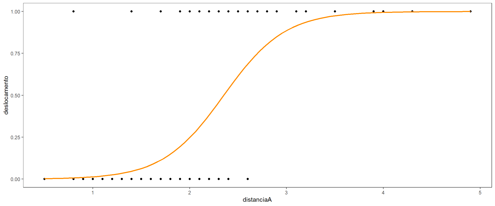
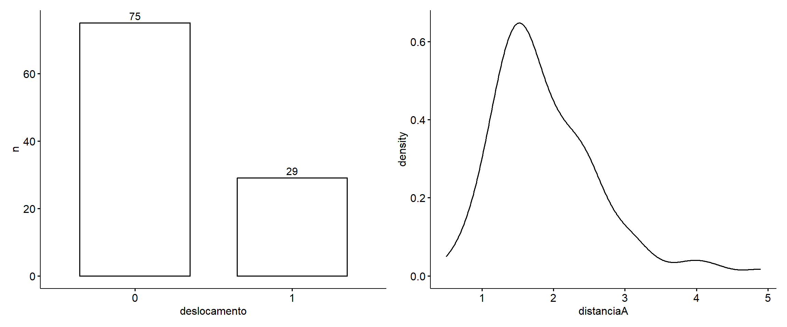
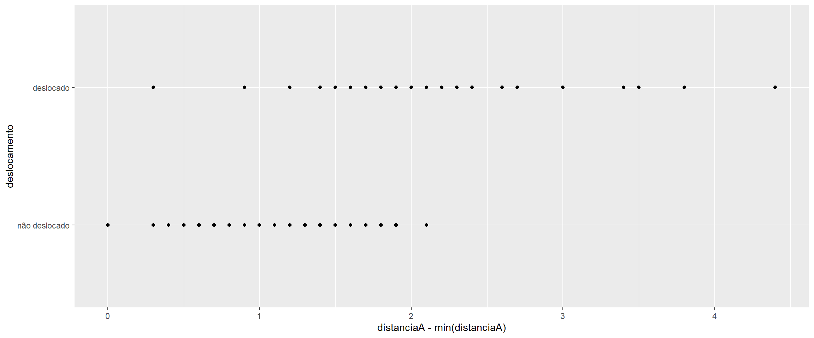

# pacotes:
library(tidyverse)
library(tidymodels)
library(gtsummary)
library(patchwork)
# dados:
dados_disco = readxl::read_xls("disco.xls",sheet = 'dados')Classificação por regressão logistica
Regressão Logistica
GLM
R
tidymodels
\[g: \mathbb{R}^p \to \{-1, 1\}.\] \[\log \left(\frac{P(Y_i = 1 \mid X = x)}{P(Y_i = 0 \mid X = x)}\right) = \alpha + \beta x_i, \quad i = 1, \dots, n.\]
\[\log\left[\frac{\theta(x_i; \alpha, \beta)}{1 - \theta(x_i; \alpha, \beta)}\right] = \alpha + x_i \beta,\]
\(\theta(x_i; \alpha, \beta)\): probabilidade de \(Y = 1\) dado que \(X = x_i\)
\(\alpha\): logaritmo da chance \(Y=1\) dado \(X = x_i\)
\(\beta\): a variação no logaritmo da chance de \(Y =1\) dado que \(X = x_i\).
Esse é o logaritmo da chance de resposta positiva. É uma função da média para dados dicotomicos no qual 0 é atribuido a resposta negativa e 1 a positiva.
das categorias 0 ou 1 passamos para um intervalo granulado quando modelos a chance de 1 em relação a 0 e atráves do log dessa chance obtemos um intervalo entre 0 e 1.
Reprodução do exemplo de modelagem de regressão logistica do Livro Estatística e Ciência de Dados (Morettin e Singer) utilizando o tidymodels.
“Um estudo realizado no Hospital Universitário da Universidade de São Paulo com o objetivo de avaliar se algumas medidas obtidas ultrassonogra camente poderiam ser utilizadas como substitutas de medidas obtidas por métodos de ressonância magnética, considerada como padrão ouro para avaliação do deslocamento do disco da articulação temporomandibular (doravante referido simplesmente como disco).”
dados_disco %>%
ggplot(aes(x = distanciaA, y = deslocamento)) +
geom_point() +
geom_smooth(method = "glm", method.args = list(family = "binomial"), se = FALSE, color = "darkorange") +
theme_test()
(dados_disco %>%
count(deslocamento) %>%
ggpubr::ggbarplot(x = "deslocamento", y = "n", label = T)) +
(dados_disco %>%
ggpubr::ggdensity(x = "distanciaA"))
Há desbalanceamento nas proporções da variáveis resposta. Devemos levar isso em consideração ao escolher qual critério de reamostragem utilizar para separar os dados em treino e teste. Nessas situações podemos fazer uso da amostragem estratificada que realiza a coleta/separação das observações estratificando-as por um alguma variável e retornando amostras com proporções balanceadas para cada grupo da variável de estratificação.
dados_disco <-
dados_disco %>%
mutate(
deslocamento = fct(if_else(deslocamento == 1, "deslocado", "não deslocado"), levels = c("não deslocado", "deslocado")),
) set.seed(31)
dados_disco_split <-
dados_disco %>%
initial_split(prop = 0.8, strata = deslocamento)
dados_disco_treino = training(dados_disco_split)
dados_disco_teste = testing(dados_disco_split)A seguir faço a especificação modelo que irei utilizar. Será utilizado o método de regressão linear generalizado no será utilizado a função de ligação logit para transformar a variável resposta com distribuição binomial para o espaço de probabilidade {0,1}.
Irei utilizar uma abordagem cuja estrutura matemática é a função de ligação logit, farei isso atráves da egine glm com o argumento family = binomial (link logit)
log_reg <-
logistic_reg() %>%
set_engine("glm", family = "binomial") %>%
set_mode("classification")
log_reg %>% translate()Logistic Regression Model Specification (classification)
Engine-Specific Arguments:
family = binomial
Computational engine: glm
Model fit template:
stats::glm(formula = missing_arg(), data = missing_arg(), weights = missing_arg(),
family = "binomial")Agora especifico a receita que irei utilizar. A receita corresponde ao descrição de como as variáveis explicativas se conectam com a variável resposta. Estamos dizendo como o modelo que iremos utilizar irá organizar e interpretar cada variável. Aqui também especificamos os passos de engenharia de recursos. a partir das funções step_... podemos aplicar diversas passos para modificar as variáveis que aparecem na receita. Podemos criar novas variáveis, centralizar, escalar e etc.
receita_1 <-
recipe(deslocamento ~ distanciaA, data = dados_disco) %>%
step_mutate(distanciaA = distanciaA - min(distanciaA))Iniciamos o workflow() para a execução do ajuste (fit) do modelo. Com o workflow iniciado adicionamos (add_...) a ele o modelo que será utilizado, bem como a receita e então realizamos o ajuste.
modelo_1 <-
workflow() %>%
add_model(log_reg) %>%
add_recipe(receita_1) %>%
fit(data = dados_disco)
modelo_1══ Workflow [trained] ══════════════════════════════════════════════════════════
Preprocessor: Recipe
Model: logistic_reg()
── Preprocessor ────────────────────────────────────────────────────────────────
1 Recipe Step
• step_mutate()
── Model ───────────────────────────────────────────────────────────────────────
Call: stats::glm(formula = ..y ~ ., family = ~"binomial", data = data)
Coefficients:
(Intercept) distanciaA
-5.859 3.164
Degrees of Freedom: 103 Total (i.e. Null); 102 Residual
Null Deviance: 123.1
Residual Deviance: 71.6 AIC: 75.6modelo_1 %>%
extract_fit_engine()
Call: stats::glm(formula = ..y ~ ., family = ~"binomial", data = data)
Coefficients:
(Intercept) distanciaA
-5.859 3.164
Degrees of Freedom: 103 Total (i.e. Null); 102 Residual
Null Deviance: 123.1
Residual Deviance: 71.6 AIC: 75.6dados_disco %>%
ggplot(aes(x = distanciaA - min(distanciaA), y = deslocamento)) +
geom_point()
Referências
MORETTIN, Pedro Alberto e SINGER, Júlio da Motta. Estatística e ciência de dados. . Rio de Janeiro: LTC